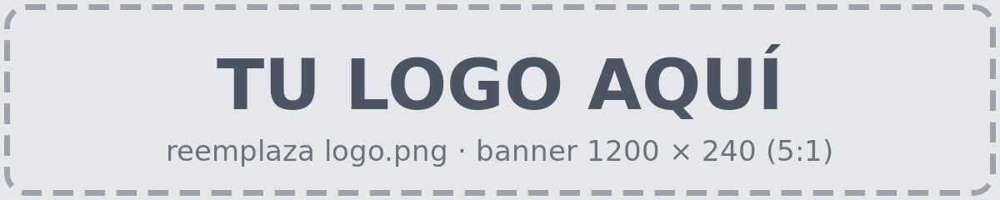
A step-by-step tour of a real forensic_compare report, followed by a short investigation.
The screenshots come from a comparison of two CM8148 captures, run with:
python3 compare.py /Users/harji/evidence/golden /Users/harji/evidence/evidence \
-o /tmp/case1/ --verify-integrity --allfilesThe first folder is the golden capture (the clean reference) and the second is the current capture (the device under investigation). For a full reference of every view, field and status, see report-guide.md.
Click any screenshot to open it at full size.
The report opens on the file table of the first filesystem, here config-active-crypt.dd.
At the top are the summary cards (291 entries: 126 unchanged, 10 modified, 81 added, 50 deleted,
24 metadata changed) and the filters. The sidebar gives access to the Overview, every
source image with its number of changes, and the case views (Integrity,
Device info, Expected-change rules, Files not used, Tools & run).
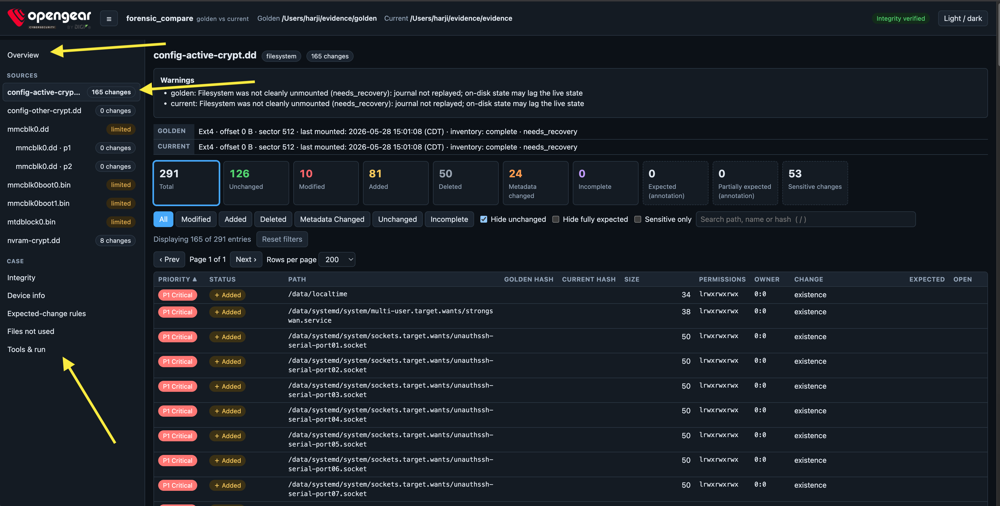
The summary of the whole comparison: changed entries, sensitive changes, image integrity and analysis state; the changed entries of each filesystem, with links that open the file table already filtered; the partitions of the disk; and the raw images, compared by hash.
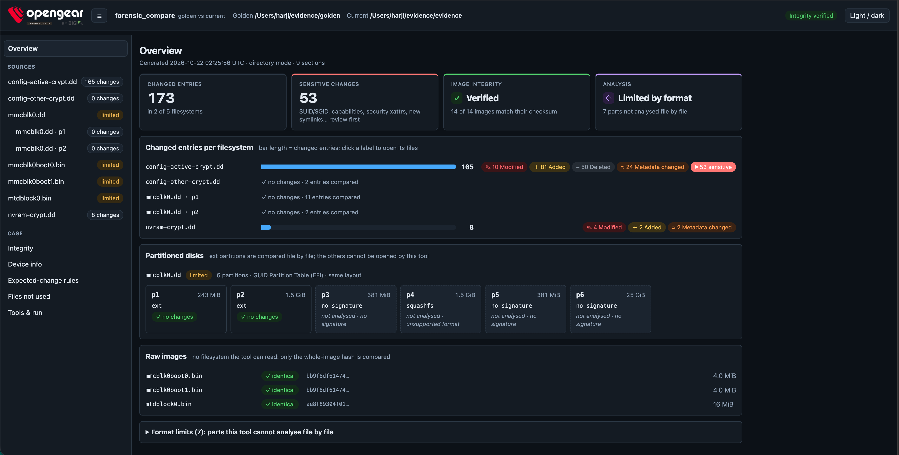
Type in the search box (press / to jump to it) to filter by path, name or hash. Searching for
pass leaves two entries: /data/pam.d/common-password (added) and
/data/passwd (modified). The Open column links to the content of each one:
view ↗ for the added file, diff ↗ for the modified one.
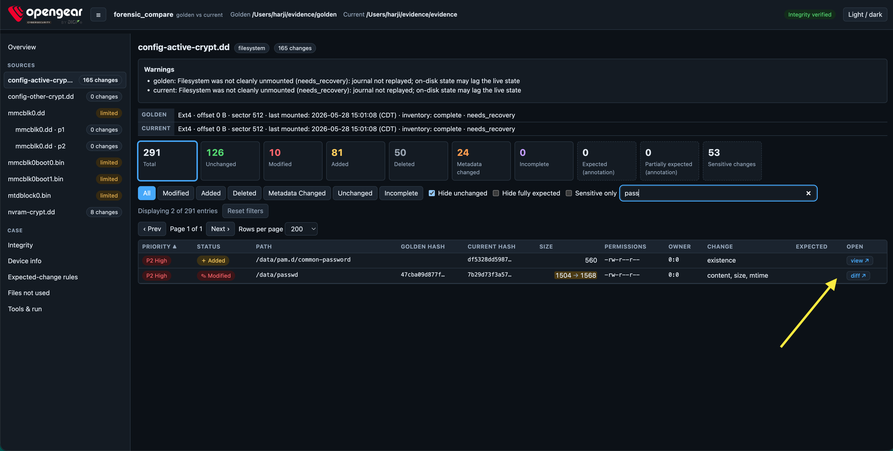
view ↗ opens the content of the file in a new tab. Here, the added
/data/pam.d/common-password, with its SHA-256. The content is extracted again read-only and
shown only if it matches the hash recorded during the analysis.
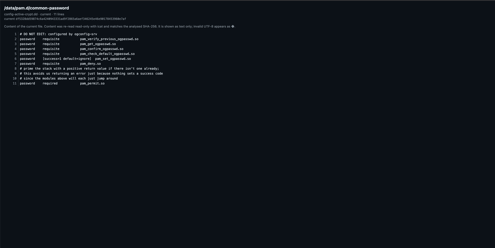
diff ↗ opens a side-by-side diff of a modified file: golden on the left, current on the
right. Added lines are highlighted in green and removed lines in red. In /data/passwd, the
current capture has one extra line, the user havi. Runs of unchanged lines are collapsed.
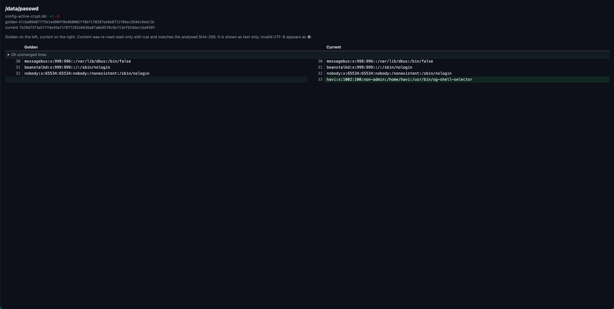
Click a collapsed block, such as 29 unchanged lines, to expand it and see the whole file.
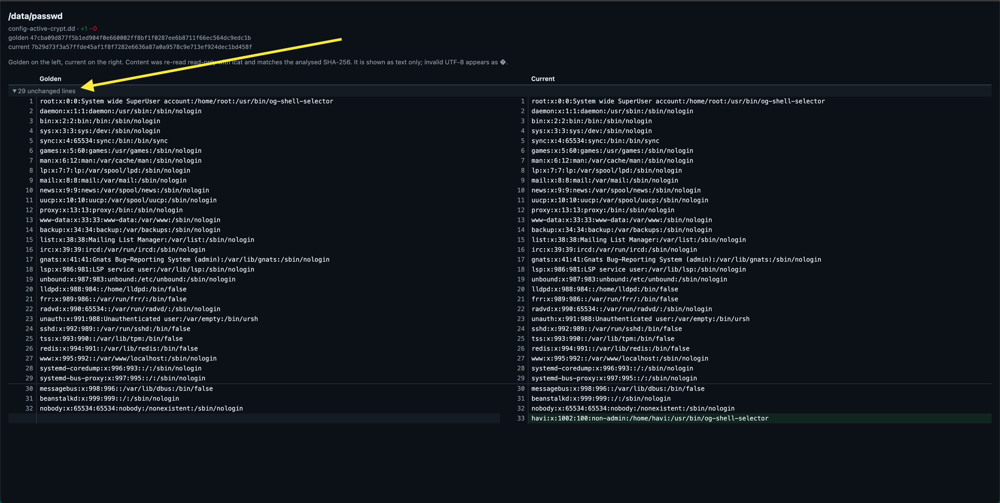
Integrity lists every image of both captures with its verdict, the checksum supplied at capture time and the SHA-256 taken before and after the analysis. Here all 14 images are verified: each one matches its checksum and did not change during the analysis.
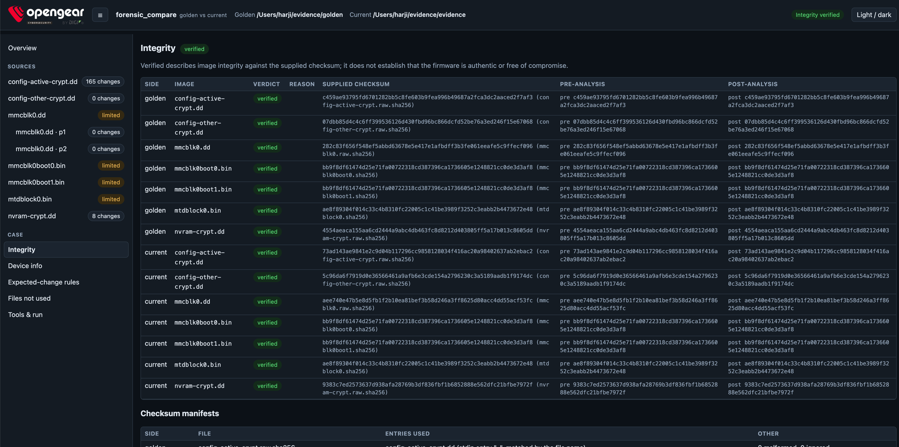
The information captured from each device (device-info.txt), side by side, with the lines
that differ highlighted. The capture date always differs.
/tmp/evidence and /tmp/evidence2), so that line can differ too. It is not a finding.
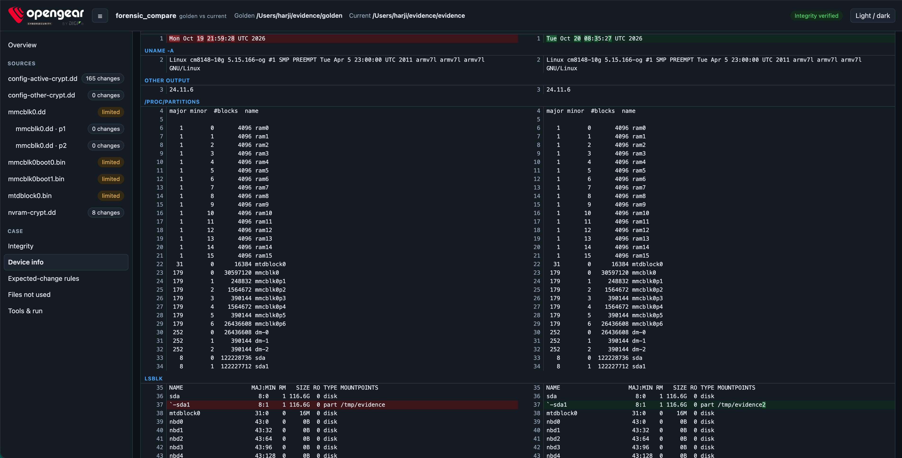
The technical reference of the run: when the report was generated, the exact command, the mode, both
inputs, the forensic_compare version and the version of every external tool used (debugfs, fls, fsstat,
icat, mmls). Every external command is also logged in tool_log.jsonl next to the report.
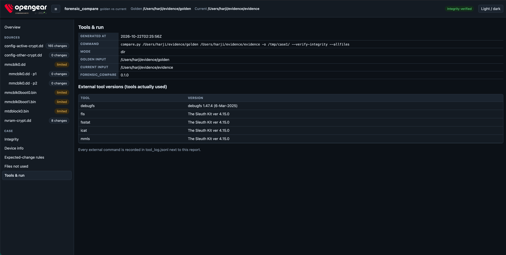
Click a file in the table to see its information: golden against current for every field (type, mode,
owner, size, mtime, SHA-256, symlink target, capabilities, extended attributes), with the fields that
differ highlighted. Here, an added symlink: it is absent in golden and points to
/lib/systemd/system/unauthssh-serial-port02.socket in current.
The details open below the table. To move them to the side, click ⇥ Beside.
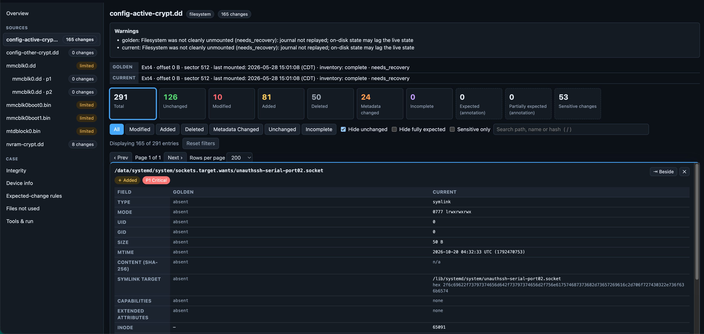
With the details beside the table, click ⇩ Below to bring them back underneath. The report remembers the choice. Below the table, there is room for full SHA-256 hashes on one line.
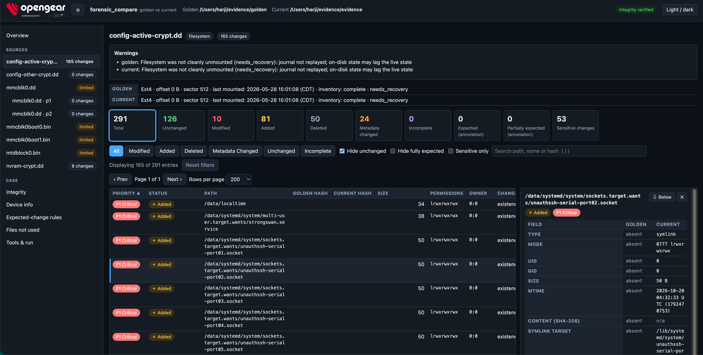
Use the filters to focus on one kind of change. Modified (the button or the card) leaves
the 10 files whose content changed. The Size column shows golden → current,
for example /data/config/conman.conf, from 27217 to 27996 bytes.
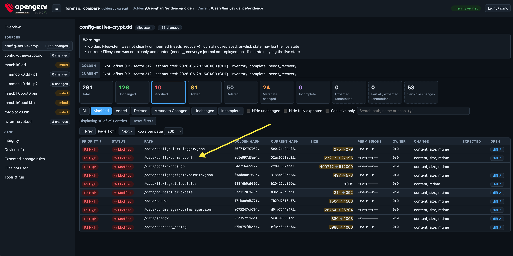
Click the file to see its details: the size, the mtime and the SHA-256 are highlighted because they changed. Open line diff in a new tab ↗ opens the changes; the chips next to it count the lines added (+19) and removed (−13).
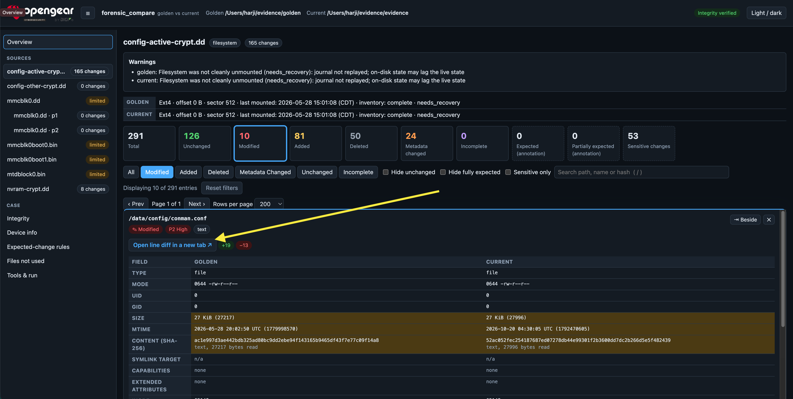
The diff opens in a new tab, with golden on the left and current on the right. Changed lines are
highlighted, and the exact characters that changed are marked inside them. In conman.conf, for
example, the ping test of each network probe changed from 8.8.8.8 to 1.1.1.1 with a
fallback to 8.8.4.4.
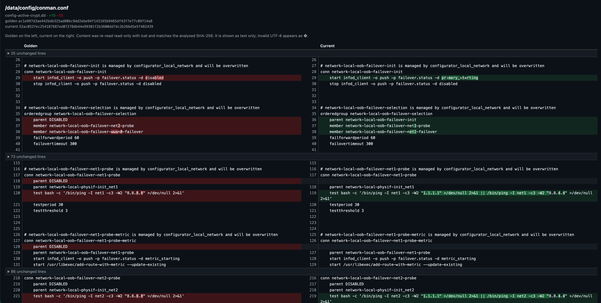
Further down, a static route block exists only in current. Collapsed blocks such as 48 unchanged lines expand with a click.
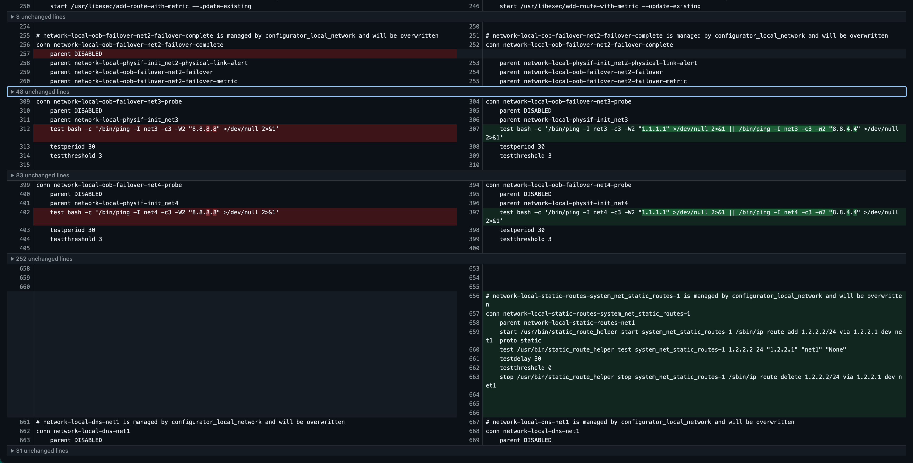